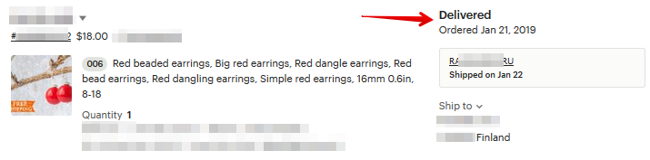
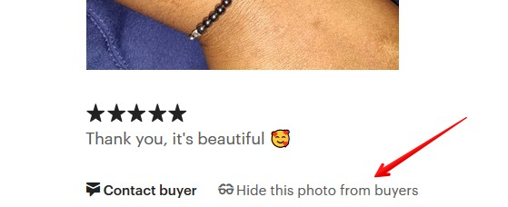
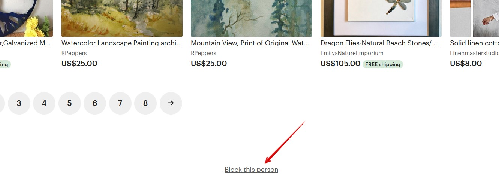

Как распечатать инвойс
Чтобы распечатать инвойс, перейдите на страницу заказа и нажмите кнопку
More actions — Print.
Etsy предлагает распечатать два документа: для покупателя (Packing slips) и для
продавца (Order receipt). Нам нужно первое.
Нажимаем Customize options, чтобы открыть настройки печати.

Здесь есть множество параметров. Каждый из них влияет на конечный вид ин-
войса.
• Shop icon/Order receipt banner/None – что будет напечатано вверху ин-
войса (иконка, баннер магазина или ничего)
• Ships from – печатать город и страну вашего магазина
• Buyer notes – комментарий к заказу, который оставил покупатель
• Listings photos – в инвойс попадёт небольшая первая фотография товара
• Private notes – включить в инвойс сообщения, которые мы написали к дан-
ному заказу
• Cost breakdown — указывать в инвойсе цену изделий (стоит отключить,
если отправляете как подарок)
• Add coupon code – прикрепить скидочный купон
• Add a personalized note – сообщение покупателю
После этого нажмите Print order(s), чтобы Etsy создал готовый PDF-документ, ко-
торый вы сможете распечатать.
У меня уникальные товары, а покупатель из Китая. Стоит ли
бояться
Порой китайцы заказывают товары, чтобы потом сделать копии и продавать их
у себя в стране или на сайтах вроде Alibaba и Aliexpress.
Поэтому, если у вас есть какие-либо опасения, вы можете отменить заказ и вер-
нуть покупателю деньги.
Я никак не могу сделать первую продажу
Да, пожалуй, ожидание первой продажи – это самое тяжелое для новичка на
Этси. И так радостно, когда это событие наконец случается.
Но если в графе продаж у вас стоит ноль, то многие покупатели зачастую пред-
почтут выбрать более «надёжный» с их точки зрения магазин, где уже есть про-
дажи и отзывы, нежели ваш. Такая вот психология поведения.
Но если гора не идёт к Магомеду, то Магомед сам идёт к горе. Что это означает
для вас? У вас наверняка есть друзья, родные, знакомые, кому нравятся ваши
работы, и кто уже купил или хочет их купить. Попросите кого-нибудь из них
сделать заказ в вашем магазине на Этси.
Только учтите, что покупатель из России не сможет ничего купить у продавца
из России – система PayPal не пропустит такой платёж.
Главное – не покупайте сами у себя, то есть не создавайте покупательский ак-
каунт на своём же компьютере. Это против правил Etsy – и за это ваш магазин
могут заблокировать.


8. Отзывы покупателей
Что такое отзывы покупателей
После того, как клиент купил ваш товар, он может оставить на него отзыв. По
сути, отзыв оставляется не только на товар, но и на магазин – то есть на вас.
Покупатель может оставить отзыв по пятибальной шкале – от 1 до 5 звёзд.
Также он может оставить комментарий к своей оценке – но это не обязательно.
Все отзывы, которые оставили вам и вашему магазину, вы можете посмотреть
на главной странице магазина в разделе Reviews.
Поле 1: средняя оценка магазина на основе отзывов за последние 12 месяцев
Поле 2: сортировка отзывов в порядке рекомендаций или по дате
Поле 3: фильтр отзывов (quality – качество, shipping – доставка, customer
service – обслуживание клиентов)
Поле 4: автор отзыва и дата
Поле 5: оценка покупателя и текст отзыва
Поле 6: написать покупателю личное сообщение (например, поблагодарить за
отзыв)
Поле 7: листинг, на который покупатель оставляет отзыв

Поле 8: вы можете пожаловаться Etsy на данный отзыв, если посчитаете, что он
не соответствует действительности
На что влияют отзывы
Самое главное – это социальная «валюта», по которой другие покупатели могут
оценить, стоит ли иметь дело с вашим магазином.
Помимо этого, Этси учитывает рейтинг магазина (среднее значение отзывов за
последние 12 месяцев) при ранжировании листингов в своём поиске. Чем хуже
отзывы – тем ниже позиции товаров. Это и логично – админы хотят, чтобы по-
купатели имели дело только с качественными магазинами.
Как узнать, что мне оставили отзыв
В Shop Manager отзывы можно найти внизу страницы Dashboard среди списка
последних действий в магазине.
Если у вас установлено мобильное приложение Etsy для продавцов, то там
также приходят уведомления о новых отзывах.
Когда покупатель может оставить отзыв
Если вы продаёте цифровые товары, то ваш клиент может оставить отзыв в те-
чение 100 дней после первого скачивания файлов.
Если же у вас физические товары, то покупатель может поставить вам оценку в
течение 100 дней после предполагаемого срока доставки, который вычисляется
так: дата покупки + время обработки заказа + время доставки.

То есть может так получиться, что покупатель получил свой заказ очень быстро,
но Этси не разрешает оставить отзыв.
Ещё один вариант – когда статус доставки на Etsy сменился на Delivered (до-
ставлено). Но иногда на Etsy бывают проблемы с обновлением статусов.
Если после этой даты прошло более 100 дней, то отзыв оставить уже нельзя.
Может ли покупатель отредактировать отзыв
Да, он может это сделать сколько угодно раз в течение 100 дней после:
• предполагаемой даты доставки или появления статуса Delivered
• первого скачивания файлов – для цифровых товаров
Если вы оставили комментарий к отзыву покупателя, то он уже не сможет его
отредактировать.
Если покупатель также открыл кейс на заказ, к которому оставил отзыв – то
пока кейс открыт, отредактировать отзыв он не сможет.
Может ли покупатель прикрепить фотографию к отзыву
Да, может – но только, если отзыв на 5 звёзд. И только с мобильного приложе-
ния Etsy.
Можно ли скрыть фотографию в отзыве
Можно. Если в отзыве есть фотография, то под текстом появится кнопка Hide
this photo from buyers. Нажмите на неё – и фото скроется.


Можно ли оставить отзыв покупателю
Нет, такой возможности на Этси нет. Отзывы могут оставлять только покупатели.
Можно ли удалить отзыв покупателя
Нет, продавец не может удалить отзыв покупателя. Это может сделать только
администрация сайта.
Если вы считаете, что покупатель нарушил правила площадки в тексте отзыва,
то можете пожаловаться администрации с помощью кнопки Report this review.
Можно ли заблокировать покупателя, чтобы он не мог поку-
пать и оставлять отзывы
На Etsy нельзя блокировать покупателей. Это могут сделать только сами адми-
нистраторы Etsy.

Поэтому, если у вас появился неадекватный клиент, рекомендуем обратиться к
админам Etsy и рассказать о своей ситуации.
Мне несколько раз писали продавцы, которым оставляли необоснованные
негативные отзывы — после жалобы в Etsy администрация удалила эти отзывы.
Но даже если администрация заблокирует пользователя, не стоит забывать, что
на Etsy можно сделать заказ как Гость, то есть без создания аккаунта. Но оста-
вить отзыв на такой заказ покупатель не сможет.
Что означает кнопка Block this person
На странице профиля пользователя внизу есть кнопка Block this person.
Если её нажать, то человек не сможет следить за тем, что вы добавляете себе в
избранное. То есть это действие не блокирует возможность совершать у вас
покупки, видеть ваш магазин или писать вам сообщения.
Какую ссылку отправить покупателю, чтобы он оставил отзыв
Бывают клиенты, которые плохо ориентируются на Этси (возможно, ваш заказ
для них первый). Поэтому они может и хотят, но не знают, где оставить отзыв
на свою покупку. В этом случае вы можете помочь им, рассказав, как это делать.
Чтобы написать отзыв, необходимо зайти в меню You – Purchases and reviews
или перейти по ссылке https://www.etsy.com/your/purchases


После этого клиент увидит список всех своих покупок. Пусть он найдёт заказ из
вашего магазина (бывают клиенты, которые могут перепутать магазины – осо-
бенно, если много заказывают на Этси – и отзыв в итоге достанется не вам).
Здесь он может сразу поставить нужное количество звездочек и написать текст
сообщения (в компьютерной версии нужно оставить минимум 5 слов).
Можно ли оставить комментарий к отзыву
Вы можете прокомментировать только негативные отзывы, то есть в 3, 2 или 1
звезду. Положительные отзывы (4-5 звёзд) нельзя прокомментировать.
Но учтите, что после вашего комментария покупатель уже не сможет отредак-
тировать текст и изменить свою оценку.
Как реагировать на отрицательный отзыв
Самое главное – постарайтесь не расстраиваться и попробуйте извлечь выгоду
из ситуации.
Для начала определите, насколько этот отзыв объективен. Если написано всё
«по делу», то это отлично! Покупатель дал вам возможность улучшить свой ма-
газин и свой сервис – он рассказал, что его не устроило.
Например, вы старались сделать красивые фотографии и совсем забыли пока-
зать своё изделие с обратной стороны (а она как раз и не устроила покупателя).
Учтите эти моменты в будущем.
Если из текста отзыва не понятно, чем же именно не доволен покупатель (или
вообще нет текста) – то напишите клиенту личное сообщение и постарайтесь
выяснить, в чём же дело. Постарайтесь принять его точку зрения и взглянуть на
проблему с его стороны.
Вы можете также постараться загладить свою вину, предложив, например, за-
менить изделие, дать скидку или сделать нечто подобное (что будет уместно в
конкретной ситуации).
Если ваше общение пойдёт гладко, и клиент увидит, что вы готовы из кожи вон
лезть, чтобы загладить свою вину – он может изменить свою оценку. Именно
поэтому не стоит сразу комментировать отрицательные отзывы!
Я также встречала советы продавцов, которые просили в личном общении с
клиентом изменить оценку, так как бизнес на Этси – это их основной источник
дохода, а плохие отзывы напрямую влияют на него.
Делать ли вам также – решайте сами. Я сама лично не давлю на покупателя,
если вижу, что он не очень-то хочет менять свой отзыв.
Если же покупатель не согласился изменить свой отзыв – то тогда следует оста-
вить комментарий. Имейте ввиду – вы пишите свой ответ не для этого человека.
Вы пишите его для своих будущих клиентов! Именно они прочитают ваш ответ,
который повлияет на их решение о покупке у вас.